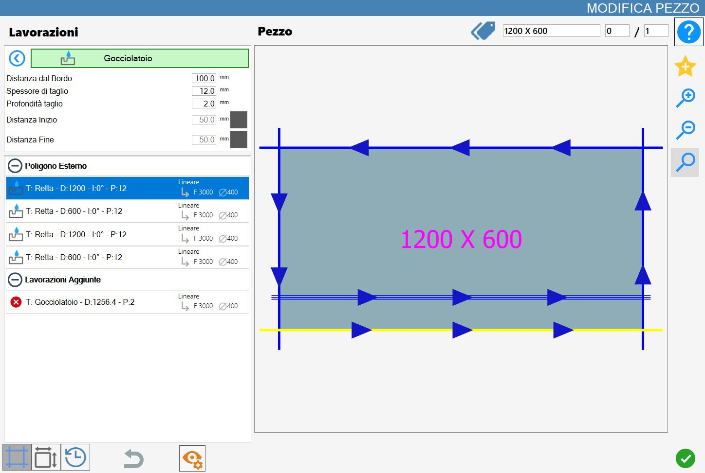
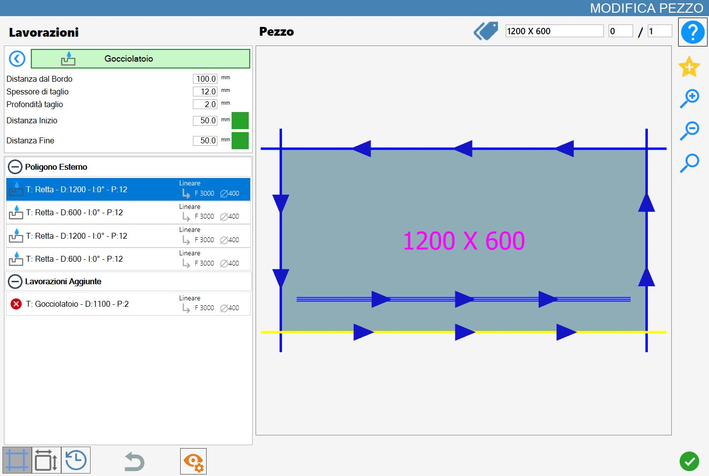

Cette fonction permet d’ajouter une coupe dont les caractéristiques diffèrent de celles d’une coupe normale.
L’interface qui s’ouvre ressemble à l’image suivante :

Paramètres
Il est possible de définir la largeur de coupe (elle doit être égale ou supérieure à l’épaisseur du disque).
Distance du bord | Distance entre la coupe sélectionnée et l’usinage de rainure d’égouttage. |
Épaisseur de coupe | Il s’agit de la largeur de l’usinage. Il est possible de réaliser une rainure d’égouttage d’une largeur supérieure à l’épaisseur du disque. |
Profondeur de coupe | Il s’agit de la profondeur de pénétration dans le matériau. |
Distance de début | Distance vers l’intérieur à laquelle l’usinage est créé par rapport au début de la coupe. |
Distance de fin | Distance vers l’intérieur à laquelle l’usinage est créé par rapport à la fin de la coupe. |
La distance de début et la distance de fin peuvent être activées ou désactivées à l’aide des boutons situés à droite de la valeur.
Lorsqu’elles sont désactivées, Parametrix ne les prend pas en compte ; lorsqu’elles sont activées, le programme calcule le décalage.
Distance de début et Distance de fin
Ces paramètres peuvent être activés ou désactivés à l’aide des boutons situés à droite de la valeur. Lorsqu’ils sont gris (désactivés), Parametrix ne les prend pas en compte ; lorsqu’ils sont verts (activés - comme sur la figure), le programme calcule le décalage.

Exécution de l’usinage
Il est possible d’appliquer l’usinage en appuyant sur le bouton situé à gauche de la coupe appropriée dans la liste des polygones.
Une icône rouge avec un « X » indique que l’usinage ne peut pas être appliqué à la coupe souhaitée.
En fonction des paramètres d’usinage définis, une rainure d’égouttage est insérée parallèlement à la coupe de la pièce sélectionnée.

L’image suivante illustre un usinage de type rainure d’égouttage, réalisé avec les mêmes paramètres que dans l’exemple précédent.

Dans les deux exemples, l’usinage a été appliqué à la coupe inférieure.
De plus, il a été ajouté à la liste des « Usinages supplémentaires », située dans la partie inférieure gauche du panneau « Modifier pièce ».